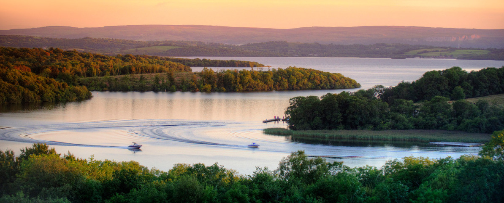
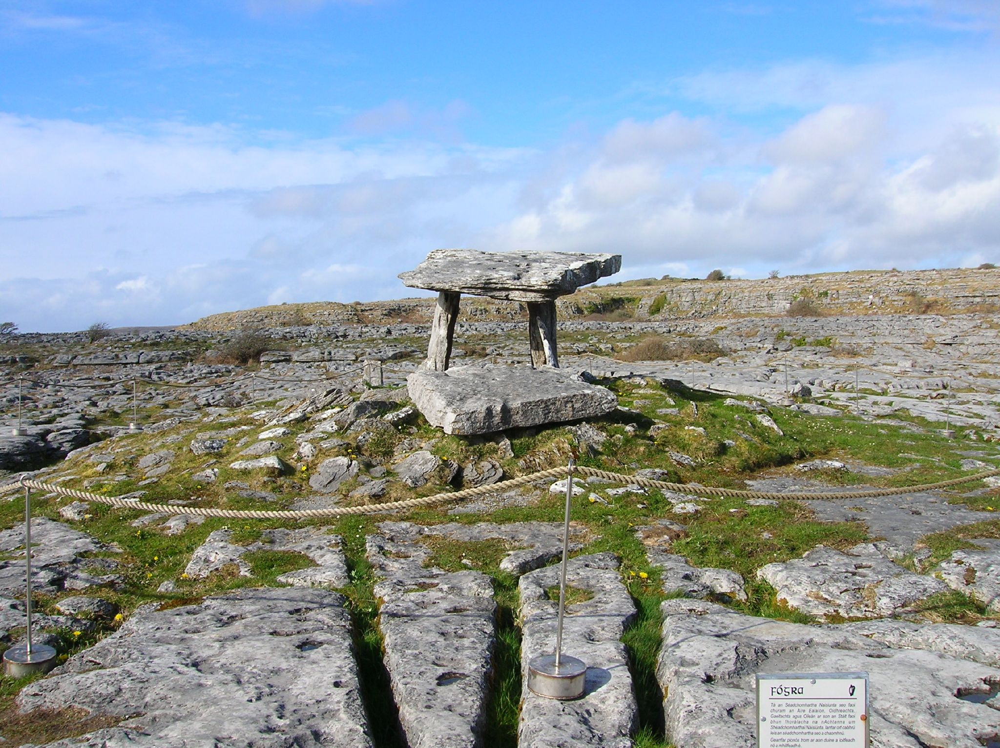
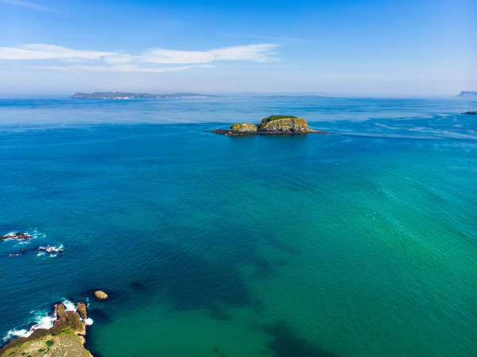
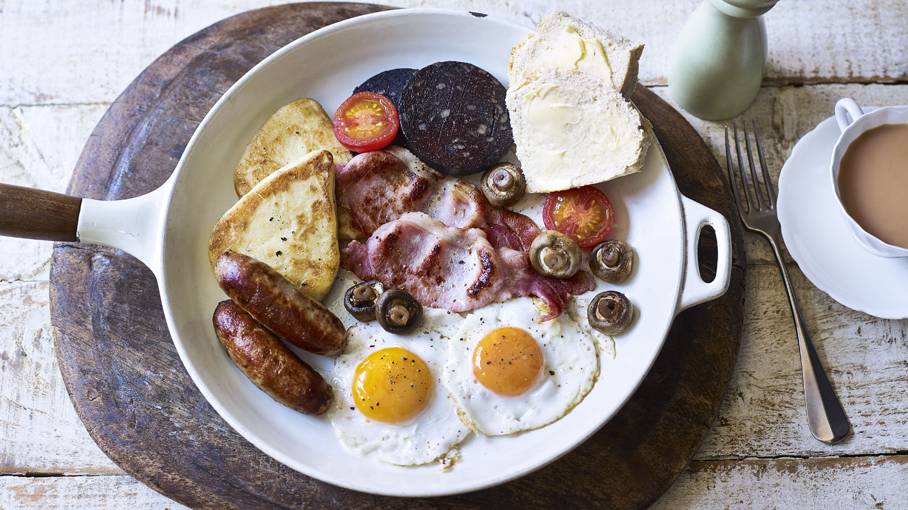

IRLANDA
rlanda (en irlandés, Éire [pronunciado /ˈeːɾʲə/]; en inglés, Ireland [pronunciado /ˈaɪəɹlənd/, conocida también por su descripción alternativa República de Irlanda (en irlandés, Poblacht na hÉireann; en inglés, Republic of Ireland) para diferenciarla de Irlanda del Norte,5 es uno de los veintisiete estados soberanos que forman la Unión Europea, que ocupa la mayor parte de la isla homónima. Su capital es Dublín, situada en el este de la isla. El país tiene una única frontera terrestre, con Irlanda del Norte, una de las naciones constitutivas del Reino Unido. La isla está rodeada por el océano Atlántico y tiene el mar Céltico al sur, el canal de San Jorge al sureste y el mar de Irlanda al este.


Historia
Irlanda es una isla situada en el noroeste de Europa en el Atlántico norte y que tiene como principal característica geográfica la baja llanura central rodeada por un anillo de montañas costeras. El pico más alto es Carrauntoohil, el cual hace 1041 metros sobre el nivel del mar. La costa occidental es accidentada, con muchas islas, penínsulas, cabos y bahías. La isla está atravesada por el río Shannon de 386 km que fluye hacia el sur del Condado de Cavan para finalmente desembocar en el Atlántico, al sur de Limerick. Hay un número considerable de lagos a lo largo de Irlanda, de los cuales el lago Neagh es el más grande.
Irlanda es una isla llena de historia, de hecho el primer asentamiento conocido en Irlanda comenzó alrededor de 8000 aC, cuando los cazadores-recolectores llegaron de la Europa continental, probablemente a través de un puente de tierra. Quedan pocos vestigios arqueológicos de este grupo, pero sus descendientes y la llegada del Neolítico, en particular de la Península Ibérica , fueron los responsables de los principales sitios del Neolítico que encontramos, como Newgrange. A la llegada de San Patricio y otros misioneros cristianos en la primera mitad del siglo 5 dC, el cristianismo comenzó a subsumir la religión celta de los indígenas, un proceso que se completó en el año 600.
Desde alrededor del año 800, más de un siglo de invasiones vikingas han hecho estragos en la cultura monástica y en varias dinastías regionales de la isla, sin embargo, ambas instituciones demostraron ser lo suficientemente fuertes como para sobrevivir y asimilar a los invasores. La llegada de los mercenarios Cambro-normando de Richard de Clare, segundo conde de Pembroke, apodado Strongbow, en 1169 marcó el inicio de más de 700 años de Norman directa y la participación de los Ingleses en Irlanda. La corona Inglesa no comenzó afirmando el control total de la isla hasta después de la Reforma Inglesa, cuando las preguntas sobre la fidelidad de los vasallos de Irlanda dio el impulso inicial para una serie de campañas militares entre 1534 y 1691. Este período se caracterizó también por una política de plantación que dio lugar a la llegada de miles de colonos protestantes Ingleses y escoceses. A medida que la derrota militar y política de la Irlanda gaélica se hizo más clara en el siglo XVII, el papel de la religión como una nueva división en Irlanda se hizo más pronunciada.
¿Que visitar en irlanda?
Navega por los lagos de Fermanagh
Sus aguas cristalinas, sus misteriosas islas con estatuas antiguas y un ritmo de vida que te obliga a ir lento harán que no puedas resistirte a viajar despacio en la región de los lagos de Fermanagh. ¿Cuál es la mejor forma de explorarlos? Haz algo diferente y navega en una barcaza, una piragua o un crucero. Navegar es una forma de vida que se complementa con almuerzos relajados en cafeterías frente al agua y pausas para recorrer en bicicleta la campiña.
Recorre a pie las Mourne
Las montañas de Mourne son un área de destacada belleza natural en el condado de Down y sus picos envueltos en niebla harán que te lo tomes todo con calma. Alójate en un refugio como Birch Cottage y pasa los días disfrutando de pícnics junto a lagos y recorriendo sin prisa laderas cubiertas de brezo. O puedes unirte al aventurero local Peter con Walk The Mournes y hacer senderismo a lo largo del muro de Mourne, que conecta 15 montañas en un recorrido de 32 km.

Maravíllate con la Madre Naturaleza en el Burren
No se puede negar que el paisaje formado por capas de piedra caliza del Parque nacional del Burren, en el condado de Clare, no se parece a ningún otro lugar del planeta. Incluso recorrerlo en coche es una experiencia, ¡pero bien merece que te detengas para deleitarte con toda su belleza! Esta Zona Especial de Conservación de la UE se caracteriza por la abundancia de delicias silvestres. De hecho, el 70% de las especies de plantas autóctonas de Irlanda florecen aquí. No te vayas sin visitar la Burren Perfumery, donde la familia Chowen embotella los aromas de Irlanda y comparte sus secretos hortícolas desde 1972
Puerto de Ballintoy, condado de Antrim
Los fans de Juego de Tronos® de HBO pueden reconocer el puerto de Ballintoy como las Islas de Hierro, pero este tranquilo lugar de la Ruta Costera de la Calzada también es conocido por lo que Chris Popham, de la comunidad Wild Swimming, describe como aguas «increíblemente cristalinas». Aparca en el puerto, camina de regreso a la carretera y no te pierdas una pequeña entrada que baja por un sendero hasta una fina franja de arena dorada. ¿Te apetece algo más aventurero? Aventúrate con Coasteering NI a «nadar, trepar y chapotear en las calas de Ballintoy». Después, entra en calor con un plato de mejillones de Strangford, en The Fullerton Arms, situado en la calle principal de Ballintoy.
El sabor de Irlanda
Dónde comer, qué probar y por qué la comida y bebida de Irlanda no se limitan a las patatas y el whiskey (aunque también nos encantan).
Coddle
Ubicado en la orilla del río Liffey, con vistas al emblemático arco del Ha’penny Bridge, The Woollen Mills ofrece un luminoso interior de estilo industrial moderno que contrasta mucho con un plato que data de la década de 1770, el “coddle” de Dublín. Siéntate en el piso de arriba junto a la ventana, contempla el ondulante cauce del río y disfruta de un sencillo bol de beicon, salchichas, cebolla y patata. Sencillo, suculento y muy dublinés.
Ulster Fry
Para alcanzar la cúspide de los desayunos cocinados, visita el St George’s Market Bar and Grill, en el centro de la ciudad, y prueba el galardonado plato de salchichas, beicon, panecillo de patata, tomates, morcilla blanca, morcilla negra y huevos. ¿El secreto? Todo se cocina en la misma sartén para dejar que los sabores se mezclen. Un éxito seguro, siempre.
